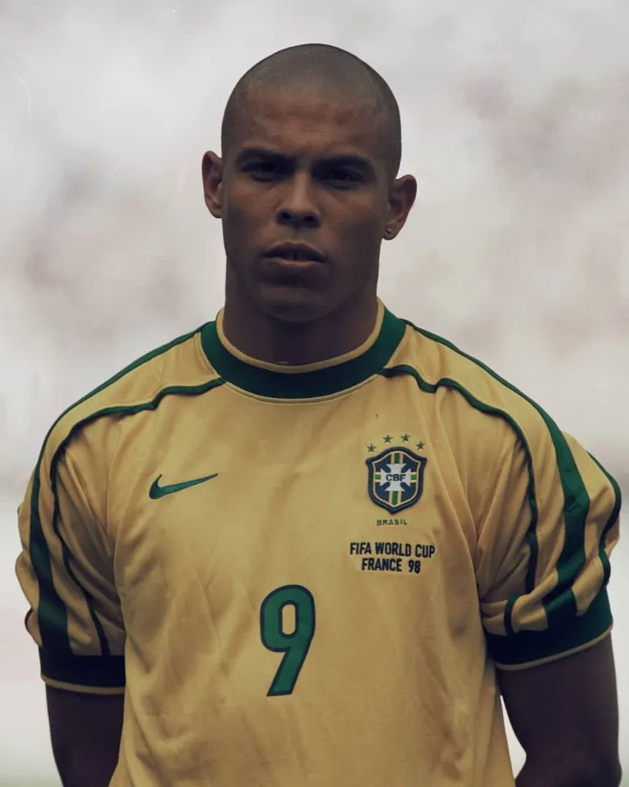
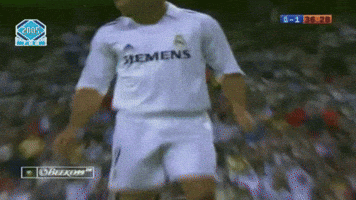

Por que me inspira:
Tudo começou quando eu era pequeno e vi ele vindo para o Corinthians, ele abriu a minha mente para um universo qual eu me apaixone... O do FUTEBOL, mesmo eu sendo torcedor fanático do SANTOS,
eu parava para ver ele jogar mesmo o meu time tendo o Neymar, o pouco que de tempo que eu vi ele jogar fez com que eu me apaixona-se pelo mundo da bola e o que mais me inspira nele é a determinação dele,
mesmo com a carreira quase que tida como impossivel de continuar ele encontrou forças e fez acontecer e ainda ganhou a copa para o Brasil.
Frases:
Foi dez vezes mais difícil. É muito mais fácil ganhar a Copa do Mundo do que passar por essa situação.
- Ronaldo
Não é uma homenagem a ninguém. Eu mesmo cortei. Ficou tão ruim assim?
- Ronaldo
Fonte: FrasesFamosas
Para Saber Mais:
Wikipedia